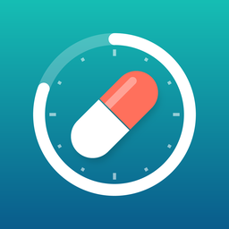

Med Timer is a simple timer for short courses of medicine, like recovering from surgery. Add a medication, tap Take when you take a dose, and Med Timer reminds you when the next one is due.
Found a problem or have a question? Open an issue (a free GitHub account is needed). Please include your iPhone or iPad model and iOS version.
I'm not getting reminders. Open Settings › Notifications › Med Timer and make sure notifications are allowed. Reminders are Time Sensitive, so turn that on too if you use Focus modes.
What's the difference between "Times a day" and "With meals"? "Times a day" spaces doses evenly over 24 hours (3 times a day = every 8 hours). "With meals" reminds you at your breakfast, lunch and dinner times, which you can change in the app's Settings.
I took a dose but forgot to tap Take. Open the medication and choose "Log a Dose I Took Earlier".
Can I mark a dose from the Home Screen? Yes. Long-press the Med Timer icon and choose "Take …".
Where is my data stored? Only on your device. See the Privacy Policy.
Med Timer is a reminder tool, not medical advice. The intervals in its medication list are common starting points only. Always follow your prescription, the label, and your doctor or pharmacist.